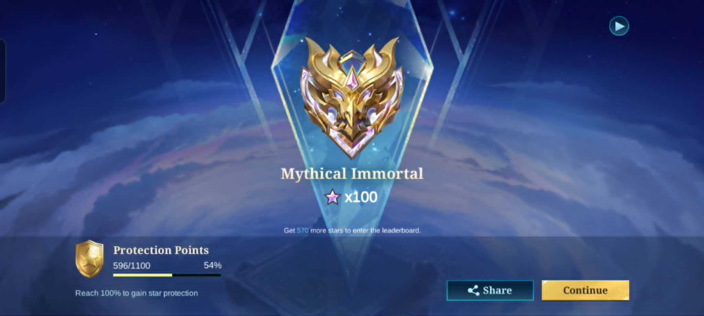
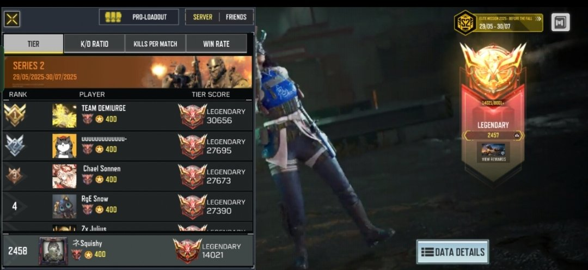
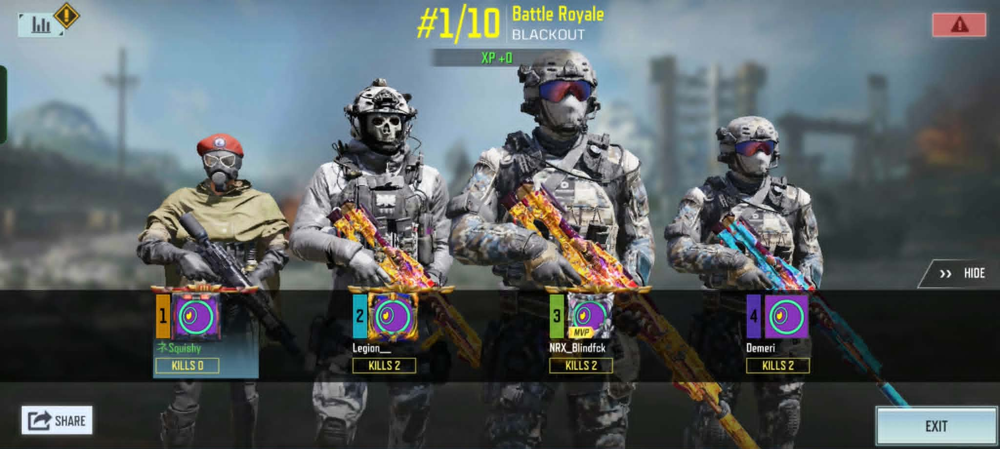

My Skills
CSS
HTML
JavaScript

I'm an IT student in Metro Dumaguete College.
I love spending my free time doing things that make me happy, especially listening to music, playing games, and watching romance anime. Music helps me relax and puts me in a good mood. I also enjoy playing games when I want to have fun, challenge myself, or simply pass the time.
When I want to relax, I enjoy watching romance anime because I like the stories, characters, and sweet moments between them. These hobbies make my free time more enjoyable and help me feel relaxed and happy.
View My Resume

Mobile Legends

Mobile Legends

Call of Duty / Other Games